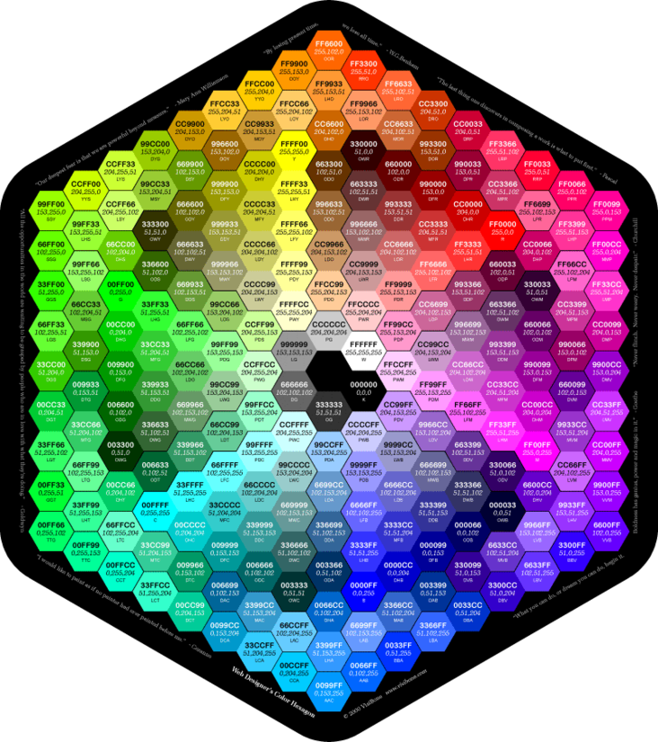

Веб-цвета — это цвета, используемые при отображении веб-страниц во всемирной паутине, а также методы описания и определения этих цветов.
 В эпоху 256-цветных видеокарт широко применялась так называемая «безопасная палитра Netscape» — однородная палитра 6×6×6. В truecolor у безопасных цветов все три компонента — R, G и B — равняются 00, 33, 66, 99, CC и FF. Браузер Netscape гарантировал, что эти цвета будут отображены без приближения или растрирования. Другими словами, 216 цветов стандартной 16-цветовой палитры и палитры 6×6×6 были наиболее предпочтительными для цвета изображения и фона. К концу 1990-х годов, с полным исчезновением 8-битного цвета с рабочих столов ОС, это требование исчезло. Тем не менее, Adobe Photoshop и поныне оснащён опцией «Только Web-цвета» (англ. Only Web Colors).